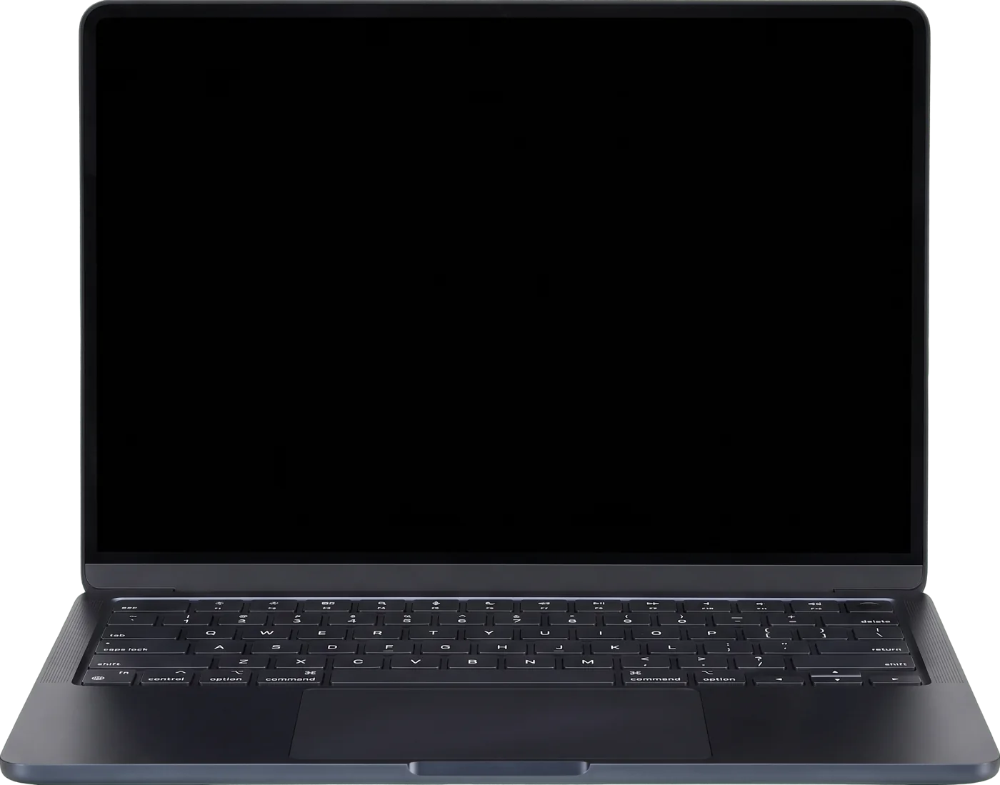

You don't have a case.
Prove us wrong.

We argue both sides, tell you where you stand, and build the packet you'd hand a lawyer — before you spend a dollar on one.
A few sentences is enough to start. You'll get a first read, then a list of what to gather.
Legal information, not legal advice.

Benchmark provides legal information only — not legal advice. No attorney-client relationship is created. All analysis is AI-generated and must be independently verified. Not a substitute for licensed legal counsel.
Important notice: Benchmark is a legal information tool, not a law firm. We provide AI-generated analysis for informational and strategic purposes only. Nothing on this platform constitutes legal advice or creates an attorney-client relationship. Always consult a licensed attorney before making legal decisions. Read our full disclaimer
How your case gets prepared
Six steps, in order. NoCase tells you which one you're on and what comes next, the whole way through.
Tell us what happened
A few sentences on the intake sheet. NoCase works out what kind of case it is and which side you're on, then asks you to confirm before it goes further.
Bring your evidence
Contracts, texts, emails, bank statements, photos from your phone. Pick a folder on your computer and add them. Each file gets a fingerprint and a timestamp the moment it goes in.
Both sides get argued
One side builds the strongest case against you. The other builds the strongest case for you. Both work from your facts and from real court opinions.
The judge weighs it
A third pass acts as the judge: who prevails, how confident, and what evidence would change the answer. It starts out skeptical. That's where the name comes from.
Answer every objection
NoCase raises the objections the other side would. You answer each one with evidence, or you concede it. Nothing gets skipped.
Walk out with your packet
Your brief, your objections and answers, and your evidence index in one download. Take it to any lawyer you choose, or use it yourself. NoCase doesn't refer you to anyone.
One real case, argued both ways
This is what comes back: the case against, the case for, and the verdict between them.
Case No. 19-08-10929. Outcome confirmed: the AI verdict matched the actual result.
What NoCase prepares
The case against you
The strongest argument the other side can make from your facts. Better to read it here than hear it for the first time across a table.
The case for you
Your strongest argument, built from the same facts and the same evidence, so you can see both at once.
A verdict you can read
Who prevails, how confident, and why. If the engine can't weigh it, it says so. It never guesses a winner.
Real law, looked up
Court opinions come from CourtListener and Texas statute text is fetched from the published code, not recalled from memory. Every citation still needs checking before anything gets filed.
Evidence with a paper trail
Each document is fingerprinted (SHA-256) and time-stamped when you add it, so you can show later that it hasn't changed.
A living brief
One document that pulls it all together and updates as your evidence does. It's what your packet is built from.
Your case file lives on your computer, not ours
NoCase has no database of cases. You pick a folder; NoCase reads and writes inside it and nowhere else. Here's the honest split.
Stays on your device
- Your documentsThe original files stay in the folder you chose.
- Your case file, chat history and briefSaved in that same folder, in plain files you can open without us.
- Your fingerprints and timestampsStored beside each document.
- Everything, if you leaveStop using NoCase and the folder is still yours. Back it up, move it, hand it to a lawyer.
Leaves your device
- What you type into the intake sheetSent to our server and the AI model so it can be analyzed.
- The text needed to answer a questionWhen you chat or build a brief, the relevant text from your documents is sent for that request.
- Scanned pages and photosSent to be read into text, because that can't be done well on your device.
- Server logsOur server logs requests for debugging, and today those logs can include text you sent. We don't sell any of it and it isn't used to train AI models.
You leave with a packet. Where you take it is up to you.
NoCase prepares cases. It doesn't refer you to lawyers, match you with one, or send your file to anybody. If you decide you want a lawyer, you pick one, and you walk in with the first few hours of work already done.
Analyze my case — freeWhat's in it
Case packet
- I.Case briefWhat happened, what you want, and the law it turns on.
- II.Objections and responsesEvery objection raised against you and how you answered it.
- III.Evidence index and chain of custodyEach document, when it was added, and its fingerprint.
Yours to keep. NoCase never sends it to anyone.
What it costs
A lawyer bills by the hour and rounds up. Every text, email and screenshot you hand over unsorted is time on the bill. NoCase gets it organized, dated and argued both ways first, so the lawyer does what only a lawyer can. Free while we're in beta; the regular price is below.
Case preparation, everything included. One price covers every case you have.
- As many documents as your case needs
- Both sides argued, with real court opinions
- The judge's verdict and a readiness review
- Objection-by-objection review
- A living case brief
- Your downloadable case packet
No card. No account. We'll tell you before that changes.
Terms, in full
Exactly what NoCase is, what it isn't, and what happens to what you give it.
IMPORTANT: Benchmark is not a law firm. This platform does not provide legal advice and does not create an attorney-client relationship. All AI-generated analysis is for informational and strategic purposes only.
Not legal advice
The information, analysis, and content generated by the NoCase application — including prosecution arguments, defense arguments, judge verdicts, case summaries, and legal citations — constitutes legal information only, not legal advice. Legal advice requires a licensed attorney who can evaluate the specific facts and circumstances of your matter in the context of applicable law.
Benchmark operates NoCase, a legal technology application that uses artificial intelligence to analyze documents and generate legal information. It is not a lawyer, law firm, or legal services provider. Use of NoCase does not create an attorney-client relationship between you and Benchmark or any of its employees, officers, or contractors.
AI-generated content limitations
All analysis generated by NoCase is produced by artificial intelligence and may contain errors, inaccuracies, or omissions. AI systems can and do generate incorrect legal citations, misstate case holdings, or produce analysis that is inapplicable to your specific jurisdiction or circumstances. All case citations must be independently verified through Westlaw, LexisNexis, or other authoritative legal research tools before any reliance.
Benchmark makes no representations or warranties regarding the accuracy, completeness, or reliability of any AI-generated content. You assume all risk associated with reliance on AI-generated legal analysis.
Unauthorized practice of law
Benchmark is designed to provide general legal information, not jurisdiction-specific legal advice. The platform does not recommend specific legal strategies, advise you to pursue or abandon legal claims, or tell you what outcome to expect in your specific case. If you need advice tailored to your specific circumstances, consult a licensed attorney in your jurisdiction.
No outcome guarantee
Nothing in the Benchmark platform, including any judge verdict, confidence score, win probability, or case assessment, constitutes a prediction or guarantee of any legal outcome. Legal outcomes depend on numerous factors that AI cannot fully evaluate, including witness credibility, judicial discretion, local court practices, and many others.
Consult an attorney
If you have an active legal matter, are considering filing a legal claim, have been served with legal process, or face potential criminal exposure, you should consult a licensed attorney immediately. Do not delay seeking legal counsel in reliance on information obtained from NoCase.
1. Acceptance of terms
By accessing or using NoCase, powered by Benchmark, you agree to be bound by these Terms of Service and all applicable laws and regulations. If you do not agree with any part of these terms, you may not use the platform.
2. Eligibility
You must be at least 18 years of age to use NoCase. By using the platform you represent and warrant that you are 18 or older and have the legal capacity to enter into a binding agreement. Use by minors is strictly prohibited.
3. Not legal advice — incorporation by reference
The full disclaimer set forth in the Disclaimer section above is incorporated herein by reference and constitutes a material term of these Terms of Service.
4. Unauthorized practice of law compliance
Benchmark is designed to comply with the unauthorized practice of law rules of all United States jurisdictions. The platform provides legal information only. If you are an attorney using the platform on behalf of clients, you remain solely responsible for all legal advice provided to your clients and for compliance with your jurisdiction's rules of professional conduct.
5. Your responsibilities
You are solely responsible for: (a) the accuracy and completeness of documents you upload; (b) compliance with any applicable litigation hold or evidence preservation obligations; (c) how you use and share AI-generated analysis; (d) obtaining appropriate legal counsel for your specific matter; (e) verifying all case citations before reliance or filing.
IMPORTANT: If you have an active legal matter with a court-imposed duty to preserve evidence, consult your attorney before deleting any case records from NoCase. Benchmark is not responsible for your evidence preservation obligations.
6. No attorney referral
Benchmark does not refer users to attorneys, does not recommend or match attorneys, does not deliver case materials to attorneys, and receives no fee from any attorney. Any decision to hire an attorney, and which one, is yours alone.
7. Limitation of liability
TO THE MAXIMUM EXTENT PERMITTED BY APPLICABLE LAW, BENCHMARK'S TOTAL LIABILITY TO YOU FOR ANY CLAIM ARISING FROM OR RELATED TO NOCASE SHALL NOT EXCEED THE GREATER OF (A) THE TOTAL AMOUNT YOU PAID TO BENCHMARK IN THE THREE MONTHS PRECEDING THE CLAIM OR (B) $100. BENCHMARK SHALL NOT BE LIABLE FOR ANY INDIRECT, INCIDENTAL, SPECIAL, CONSEQUENTIAL, OR PUNITIVE DAMAGES.
8. Governing law
These Terms shall be governed by the laws of the State of Texas without regard to conflict of law provisions. Any disputes shall be resolved in the courts of Montgomery County, Texas.
9. Changes to terms
Benchmark reserves the right to modify these Terms at any time. We will provide notice of material changes. Continued use of the platform after notice constitutes acceptance of the modified Terms.
Where your case lives
NoCase is local-first. Your case file — documents, chat history, brief, and evidence records — is stored in a folder on your own device that you choose. Benchmark does not operate a database of user cases and does not keep a copy of your case file.
What is sent to our server
To produce an analysis, NoCase sends the following to Benchmark's analysis server, which passes it to an AI model hosted on Amazon Web Services: (a) what you type into the intake sheet or the chat; (b) the text from your documents that is relevant to the request you made; (c) scanned pages and images, when they need to be read into text. This is sent for the purpose of answering that request.
Server logs
Our server keeps operational logs of requests for debugging and abuse prevention. Those logs may include the text you submitted and the analysis returned. We do not sell your data. We do not share it with advertisers. We do not use it to train AI models.
Third-party lookups
To find court opinions and statutes, our server sends search phrases (for example, a case type) to CourtListener and to a public mirror of the Texas statutes. Your documents are not sent to them.
Accounts and payment
NoCase does not currently require an account and does not collect payment. If that changes, this policy will be updated before it does.
Subpoenas and legal process
If Benchmark receives a valid subpoena or court order, we will notify you to the extent we are able and permitted by law, and we can produce only what we possess: server logs. We do not possess your case file.
Your rights
You may stop using NoCase at any time; your case folder remains on your device and under your control. Texas residents have additional rights under the Texas Data Privacy and Security Act.
Contact
For privacy inquiries: privacy@benchmark.com · Benchmark · Montgomery County, Texas
Deleting your case
Your case is a folder on your device. To delete it, delete that folder. There is no copy of your case file on Benchmark's servers to delete.
What we may still hold
Server logs of past requests, as described in the Privacy policy. To ask about or request removal of log data connected to you, write to privacy@benchmark.com.
CRITICAL: If you have an active court case, a litigation hold, or any legal obligation to preserve evidence, consult your attorney before deleting your case records. Benchmark cannot recover deleted data and is not responsible for your evidence preservation obligations under applicable law. Intentional destruction of evidence may constitute spoliation and carry legal consequences.
Copies you have shared
If you have shared your case with an attorney or any third party — including by email, download, or printout — those copies are outside Benchmark's control and cannot be deleted by Benchmark. You are responsible for coordinating with third parties regarding any copies they hold.
Questions
Walk into any lawyer's office prepared. Or find out you don't need to.
Analyze my case — freeBenchmark provides legal information only. Not a law firm. Not legal advice. Not a substitute for a licensed attorney.